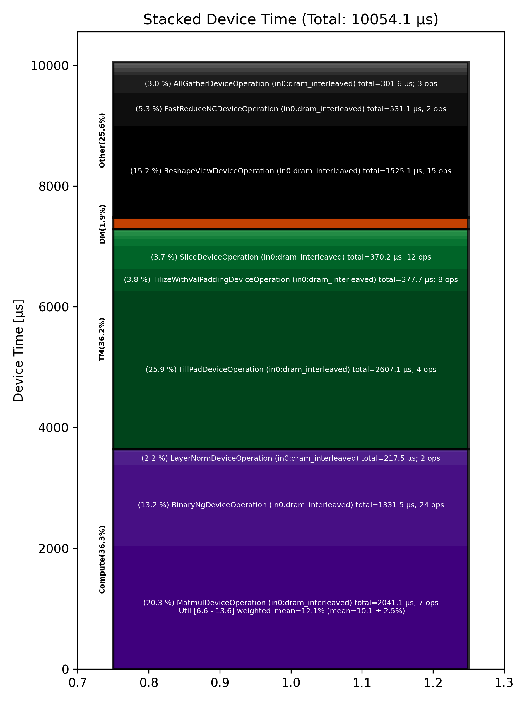

🚀 Performance Report 🚀 ======================== ID Total % Bound OP Code Device Device Time Op-to-Op Gap Cores DRAM DRAM % FLOPs FLOPs % Math Fidelity ------------------------------------------------------------------------------------------------------------------------------------------------------------------------- 17 0.5 % LayerNormDeviceOperation 4 108 μs 1 BF16, BF16 => BF16 51 0.2 % SLOW MatmulDeviceOperation 32 x 2880 x 512 7 43 μs 1 μs 16 39 GB/s 13.5 % 2.2 TFLOPs 6.6 % HiFi2 BF16 x BFP8 => BF16 70 0.1 % ReshapeViewDeviceOperation 3 12 μs 1 μs 72 BF16 => BF16 114 0.0 % SliceDeviceOperation 20 5 μs 1 μs 72 BF16 => BF16 139 0.1 % BinaryNgDeviceOperation 29 15 μs 1 μs 72 BF16, BF16 => BF16 172 0.0 % SliceDeviceOperation 30 5 μs 1 μs 72 BF16 => BF16 195 0.1 % BinaryNgDeviceOperation 25 16 μs 1 μs 72 BF16, BF16 => BF16 251 0.0 % BinaryNgDeviceOperation 17 6 μs 1 μs 72 BF16, BF16 => BF16 289 0.1 % BinaryNgDeviceOperation 8 16 μs 1 μs 72 BF16, BF16 => BF16 296 0.1 % BinaryNgDeviceOperation 1 16 μs 1 μs 72 BF16, BF16 => BF16 353 0.0 % BinaryNgDeviceOperation 8 6 μs 1 μs 72 BF16, BF16 => BF16 367 0.0 % ConcatDeviceOperation 6 7 μs 1 μs 72 BF16, BF16 => BF16 396 0.1 % SLOW MatmulDeviceOperation 32 x 2880 x 64 3 31 μs 1 μs 2 12 GB/s 4.1 % 0.4 TFLOPs 9.2 % HiFi2 BF16 x BFP8 => BF16 432 0.0 % ReshapeViewDeviceOperation 5 4 μs 1 μs 32 BF16 => BF16 466 0.0 % SliceDeviceOperation 20 3 μs 1 μs 16 BF16 => BF16 507 0.0 % PermuteDeviceOperation 17 6 μs 1 μs 16 BF16 => BF16 518 0.0 % BinaryNgDeviceOperation 3 5 μs 1 μs 72 BF16, BF16 => BF16 549 0.0 % SliceDeviceOperation 27 3 μs 1 μs 16 BF16 => BF16 591 0.4 % PermuteDeviceOperation 6 4 μs 99 μs 16 BF16 => BF16 614 1.1 % BinaryNgDeviceOperation 3 5 μs 246 μs 72 BF16, BF16 => BF16 656 1.1 % BinaryNgDeviceOperation 5 3 μs 258 μs 72 BF16, BF16 => BF16 679 1.1 % BinaryNgDeviceOperation 2 5 μs 261 μs 72 BF16, BF16 => BF16 729 0.4 % BinaryNgDeviceOperation 12 5 μs 99 μs 72 BF16, BF16 => BF16 761 0.9 % BinaryNgDeviceOperation 12 3 μs 204 μs 72 BF16, BF16 => BF16 800 1.0 % ConcatDeviceOperation 9 2 μs 237 μs 32 BF16, BF16 => BF16 805 1.1 % InterleavedToShardedDeviceOperation 27 1 μs 264 μs 16 BF16 => BF16 865 1.0 % PagedUpdateCacheDeviceOperation 8 4 μs 231 μs 16 BF16, BF16 => BF16 873 1.5 % SLOW MatmulDeviceOperation 32 x 2880 x 64 30 30 μs 328 μs 2 12 GB/s 4.3 % 0.4 TFLOPs 9.6 % HiFi2 BF16 x BFP8 => BF16 909 0.5 % ReshapeViewDeviceOperation 31 3 μs 112 μs 32 BF16 => BF16 930 0.7 % PermuteDeviceOperation 24 4 μs 159 μs 32 BF16 => BF16 967 0.5 % InterleavedToShardedDeviceOperation 2 1 μs 106 μs 16 BF16 => BF16 1017 0.6 % PagedUpdateCacheDeviceOperation 12 4 μs 147 μs 16 BF16, BF16 => BF16 1039 0.4 % PermuteDeviceOperation 6 8 μs 96 μs 72 BF16 => BF16 1058 1.0 % SdpaDecodeDeviceOperation 24 17 μs 219 μs 72 BF16, BF16 => BF16 1095 1.0 % PermuteDeviceOperation 2 22 μs 216 μs 72 BF16 => BF16 1125 1.0 % ReshapeViewDeviceOperation 27 14 μs 231 μs 16 BF16 => BF16 1159 1.4 % SLOW MatmulDeviceOperation 32 x 512 x 2880 10 15 μs 312 μs 45 113 GB/s 39.2 % 6.3 TFLOPs 13.6 % HiFi4 BF16 x BFP8 => BF16 1201 1.9 % AllGatherDeviceOperation 0 69 μs 364 μs 24 BF16 => BF16 1246 0.9 % FillPadDeviceOperation 11 155 μs 47 μs 8 BF16 => BF16 1264 0.7 % FastReduceNCDeviceOperation 5 10 μs 146 μs 72 BF16 => BF16 1287 0.3 % SliceDeviceOperation 2 3 μs 76 μs 72 BF16 => BF16 1339 0.9 % BinaryNgDeviceOperation 17 5 μs 208 μs 72 BF16, BF16 => BF16 1367 1.3 % ReshapeViewDeviceOperation 14 45 μs 252 μs 72 BF16 => BF16 1391 1.2 % BinaryNgDeviceOperation 6 50 μs 224 μs 72 BF16, BF16 => BF16 1426 1.3 % LayerNormDeviceOperation 20 110 μs 196 μs 16 BF16, BF16 => BF16 1468 0.1 % ReshapeViewDeviceOperation 18 30 μs 1 μs 72 BF16 => BF16 1501 0.5 % UntilizeWithUnpaddingDeviceOperation 19 9 μs 118 μs 45 BF16 => BF16 1533 1.5 % RepeatDeviceOperation 19 59 μs 281 μs 72 BF16 => BF16 1561 1.5 % TilizeWithValPaddingDeviceOperation 12 292 μs 49 μs 45 BF16 => BF16 1592 6.6 % SLOW MatmulDeviceOperation 32 x 2880 x 736 5 1,393 μs 142 μs 23 54 GB/s 18.8 % 3.1 TFLOPs 13.2 % HiFi4 BF16 x BFP8 => BF16 1629 0.1 % BinaryNgDeviceOperation 19 22 μs 1 μs 72 BF16, BF16 => BF16 1664 0.1 % UntilizeWithUnpaddingDeviceOperation 9 24 μs 1 μs 32 BF16 => BF16 1671 0.7 % SliceDeviceOperation 2 155 μs 1 μs 72 BF16 => BF16 1728 0.1 % TilizeWithValPaddingDeviceOperation 9 28 μs 1 μs 32 BF16 => BF16 1749 0.0 % UnaryDeviceOperation 23 9 μs 1 μs 72 BF16 => BF16 1788 0.1 % BinaryNgDeviceOperation 18 18 μs 1 μs 72 BF16, BF16 => BF16 1808 0.1 % UntilizeWithUnpaddingDeviceOperation 5 24 μs 1 μs 32 BF16 => BF16 1841 0.7 % SliceDeviceOperation 4 154 μs 1 μs 72 BF16 => BF16 1883 0.1 % TilizeWithValPaddingDeviceOperation 17 28 μs 1 μs 32 BF16 => BF16 1913 0.0 % UnaryDeviceOperation 12 9 μs 1 μs 72 BF16 => BF16 1945 0.1 % BinaryNgDeviceOperation 12 19 μs 1 μs 72 BF16, BF16 => BF16 1967 0.1 % UnaryDeviceOperation 6 13 μs 1 μs 72 BF16 => BF16 1992 0.4 % BinaryNgDeviceOperation 1 15 μs 79 μs 72 BF16, BF16 => BF16 2048 0.8 % BinaryNgDeviceOperation 9 14 μs 170 μs 72 BF16, BF16 => BF16 2074 4.5 % SLOW MatmulDeviceOperation 32 x 384 x 2880 25 496 μs 547 μs 45 85 GB/s 29.4 % 4.6 TFLOPs 9.9 % HiFi4 BF16 x BFP8 => BF16 2097 1.0 % ReduceScatterDeviceOperation 0 178 μs 56 μs 24 BF16 => BF16 2129 1.7 % AllGatherDeviceOperation 0 180 μs 227 μs 40 BF16 => BF16 2149 0.4 % BinaryNgDeviceOperation 27 84 μs 1 μs 72 BF16, BF16 => BF16 2209 5.9 % ReshapeViewDeviceOperation 8 1,244 μs 125 μs 72 BF16 => BF16 2227 0.3 % TypecastDeviceOperation 21 58 μs 1 μs 72 BF16 => FP32 2245 0.2 % ReshapeViewDeviceOperation 27 46 μs 1 μs 72 FP32 => FP32 2300 0.1 % SLOW MatmulDeviceOperation 32 x 2880 x 32 16 33 μs 1 μs 1 14 GB/s 4.9 % 0.2 TFLOPs 8.8 % HiFi2 FP32 x BFP8 => FP32 2317 0.0 % TypecastDeviceOperation 31 2 μs 2 μs 1 FP32 => BF16 2344 0.0 % FillPadDeviceOperation 1 3 μs 2 μs 1 BF16 => BF16 2393 0.2 % PadDeviceOperation 12 37 μs 1 μs 2 BF16 => BF16 2430 0.0 % FillPadDeviceOperation 11 4 μs 2 μs 1 BF16 => BF16 2442 0.2 % TopKDeviceOperation 28 44 μs 2 μs 1 BF16 => BF16 2484 0.0 % SliceDeviceOperation 22 1 μs 2 μs 1 BF16 => BF16 2516 0.0 % SliceDeviceOperation 22 1 μs 2 μs 1 UINT16 => UINT16 2539 0.7 % TypecastDeviceOperation 29 2 μs 152 μs 1 UINT16 => INT32 2590 0.4 % ReshapeViewDeviceOperation 11 5 μs 98 μs 16 INT32 => INT32 2603 0.7 % UntilizeWithUnpaddingDeviceOperation 29 3 μs 167 μs 16 INT32 => INT32 2630 0.4 % UntilizeWithUnpaddingDeviceOperation 3 3 μs 90 μs 16 INT32 => INT32 2681 0.7 % PermuteDeviceOperation 12 3 μs 158 μs 16 INT32 => INT32 2719 0.4 % PermuteDeviceOperation 10 3 μs 85 μs 16 INT32 => INT32 2735 0.8 % ConcatDeviceOperation 6 2 μs 178 μs 32 INT32, INT32 => INT32 2776 0.4 % PermuteDeviceOperation 13 3 μs 91 μs 16 INT32 => INT32 2806 0.8 % TilizeWithValPaddingDeviceOperation 15 7 μs 170 μs 16 INT32 => INT32 2847 0.6 % SoftmaxDeviceOperation 10 24 μs 111 μs 72 BF16 => BF16 2865 2.1 % AllGatherDeviceOperation 0 53 μs 445 μs 24 INT32 => INT32 2882 1.1 % AllBroadcastDeviceOperation 8 38 μs 230 μs 4 BF16 => BF16 2914 0.5 % UntilizeWithUnpaddingDeviceOperation 24 7 μs 102 μs 1 BF16 => BF16 2974 0.7 % UntilizeWithUnpaddingDeviceOperation 11 7 μs 165 μs 1 BF16 => BF16 2991 0.3 % UntilizeWithUnpaddingDeviceOperation 6 7 μs 74 μs 1 BF16 => BF16 3035 0.8 % UntilizeWithUnpaddingDeviceOperation 17 7 μs 170 μs 1 BF16 => BF16 3073 0.4 % ConcatDeviceOperation 8 2 μs 95 μs 64 BF16, BF16 => BF16 3080 1.2 % TilizeWithValPaddingDeviceOperation 1 5 μs 268 μs 2 BF16 => BF16 3126 0.5 % ReshapeViewDeviceOperation 15 10 μs 116 μs 8 INT32 => INT32 3147 0.7 % SliceDeviceOperation 29 2 μs 159 μs 8 INT32 => INT32 3189 1.2 % UntilizeWithUnpaddingDeviceOperation 23 14 μs 256 μs 8 INT32 => INT32 3214 0.5 % SliceDeviceOperation 7 4 μs 118 μs 72 INT32 => INT32 3252 0.5 % TilizeWithValPaddingDeviceOperation 22 8 μs 118 μs 8 INT32 => INT32 3292 0.5 % BinaryNgDeviceOperation 18 11 μs 109 μs 72 INT32, INT32 => INT32 3329 0.8 % BinaryNgDeviceOperation 8 3 μs 173 μs 72 INT32, INT32 => INT32 3333 1.1 % ReshapeViewDeviceOperation 27 7 μs 256 μs 8 INT32 => INT32 3391 0.4 % ReshapeViewDeviceOperation 10 4 μs 98 μs 8 BF16 => BF16 3421 0.7 % UntilizeWithUnpaddingDeviceOperation 19 7 μs 154 μs 1 INT32 => INT32 3440 0.4 % UntilizeWithUnpaddingDeviceOperation 5 6 μs 83 μs 1 BF16 => BF16 3477 0.9 % ScatterDeviceOperation 23 60 μs 161 μs 1 BF16, INT32 => BF16 3503 0.3 % TilizeWithValPaddingDeviceOperation 6 5 μs 56 μs 64 BF16 => BF16 3549 0.7 % ReshapeViewDeviceOperation 19 23 μs 152 μs 2 BF16 => BF16 3560 0.3 % UntilizeDeviceOperation 1 4 μs 71 μs 2 BF16 => BF16 3605 2.4 % MeshPartitionDeviceOperation 29 2 μs 569 μs 16 BF16 => BF16 3629 0.6 % TilizeWithValPaddingDeviceOperation 31 4 μs 134 μs 1 BF16 => BF16 3666 0.8 % TransposeDeviceOperation 20 2 μs 190 μs 72 BF16 => BF16 3682 1.3 % ReshapeViewDeviceOperation 24 50 μs 258 μs 72 BF16 => BF16 3728 4.3 % BinaryNgDeviceOperation 5 943 μs 61 μs 72 BF16, BF16 => BF16 3773 10.5 % FillPadDeviceOperation 19 2,445 μs 1 μs 72 BF16 => BF16 3803 2.2 % FastReduceNCDeviceOperation 17 521 μs 1 μs 72 BF16 => BF16 3811 0.1 % SliceDeviceOperation 25 33 μs 1 μs 72 BF16 => BF16 3846 0.2 % BinaryNgDeviceOperation 3 48 μs 1 μs 72 BF16, BF16 => BF16 3885 0.1 % ReshapeViewDeviceOperation 31 29 μs 1 μs 72 BF16 => BF16 ------------------------------------------------------------------------------------------------------------------------------------------------------------------------- 100.0 % 122 device ops, 0 host ops, 0 signposts 10,054 μs 13,307 μs 📊 Stacked report 📊 ==================== Total % Op Code Device Time Sum Op Count Op Category Min FLOPs Max FLOPs Mean FLOPs Std FLOPs Weighted Mean FLOPs ------------------------------------------------------------------------------------------------------------------------------------------------------------------------------ 25.93 % FillPadDeviceOperation (in0:dram_interleaved) 2,607.14 μs 4 TM 20.30 % MatmulDeviceOperation (in0:dram_interleaved) 2,041.15 μs 7 Compute 6.62 % 13.61 % 10.12 % 2.48 % 12.06 % 15.17 % ReshapeViewDeviceOperation (in0:dram_interleaved) 1,525.12 μs 15 Other 13.24 % BinaryNgDeviceOperation (in0:dram_interleaved) 1,331.48 μs 24 Compute 5.28 % FastReduceNCDeviceOperation (in0:dram_interleaved) 531.12 μs 2 Other 3.76 % TilizeWithValPaddingDeviceOperation (in0:dram_interleaved) 377.74 μs 8 TM 3.68 % SliceDeviceOperation (in0:dram_interleaved) 370.19 μs 12 TM 3.00 % AllGatherDeviceOperation (in0:dram_interleaved) 301.60 μs 3 Other 2.16 % LayerNormDeviceOperation (in0:dram_interleaved) 217.49 μs 2 Compute 1.77 % ReduceScatterDeviceOperation (in0:dram_interleaved) 178.09 μs 1 DM 1.18 % UntilizeWithUnpaddingDeviceOperation (in0:dram_interleaved) 118.78 μs 12 TM 0.62 % TypecastDeviceOperation (in0:dram_interleaved) 62.41 μs 3 TM 0.59 % ScatterDeviceOperation (in0:dram_interleaved) 59.59 μs 1 Other 0.59 % RepeatDeviceOperation (in0:dram_interleaved) 59.45 μs 1 Other 0.51 % PermuteDeviceOperation (in0:dram_interleaved) 51.33 μs 8 TM 0.44 % TopKDeviceOperation (in0:dram_interleaved) 44.09 μs 1 Other 0.38 % AllBroadcastDeviceOperation (in0:dram_interleaved) 38.16 μs 1 Other 0.37 % PadDeviceOperation (in0:dram_interleaved) 36.75 μs 1 TM 0.31 % UnaryDeviceOperation (in0:dram_interleaved) 31.48 μs 3 Compute 0.23 % SoftmaxDeviceOperation (in0:dram_interleaved) 23.62 μs 1 Compute 0.17 % SdpaDecodeDeviceOperation (in0:dram_interleaved) 16.85 μs 1 Other 0.13 % ConcatDeviceOperation (in0:dram_interleaved) 12.67 μs 4 TM 0.08 % PagedUpdateCacheDeviceOperation (in0:dram_interleaved) 8.28 μs 2 DM 0.04 % UntilizeDeviceOperation (in0:dram_interleaved) 4.04 μs 1 TM 0.02 % InterleavedToShardedDeviceOperation (in0:dram_interleaved) 2.02 μs 2 DM 0.02 % TransposeDeviceOperation (in0:dram_interleaved) 1.85 μs 1 TM 0.02 % MeshPartitionDeviceOperation (in0:dram_interleaved) 1.59 μs 1 Other ------------------------------------------------------------------------------------------------------------------------------------------------------------------------------
